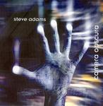

| Artist: | Steve Adams |
| Title: | Camera Obscura |
| Label: | 3 Ears Oskar 1022 CD |
| Length(s): | 58 minutes |
| Year(s) of release: | 2004 |
| Month of review: | [09/2005] |
| 1) | In A World With No Sky | 5.02 |
| 2) | Car 333 | 4.42 |
| 3) | Quicksand | 5.55 |
| 4) | Seven Four | 5.02 |
| 5) | The Door Stays Open | 4.21 |
| 6) | Silent Divide | 5.00 |
| 7) | Jacuzzi | 4.20 |
| 8) | Perelandra | 5.39 |
| 9) | Gnomes Uncombed | 3.39 |
| 10) | Fragile | 4.58 |
| 11) | Diminished Capacity | 4.59 |
| 12) | Wisteria | 4.57 |
Like its predecessor, Car 333 is dominated by the guitar, but again we open promising with that bit of tension being raised. And hear we do not simply end up in a guitar riddled passage, because the more tension oriented part reoccurs as well. Still, the common denominator is the solo guitar which puts itself very much at the head. The music is quite powerful, but also rather straightforward, compositionally. This sounds more like a guitar hero release than a symphonic one, although some parts are really very symphonic. This rather surprises me in view of the background of Steve Adams.
Quicksand continues in the same vein: sharp and clear guitar playing dominates the scene. The pace is somewhat lower, and the drums more percussive while the guitar has a spacey feel. Seven Four brgins the keyboards to the fore, they get an extensive solo spot this time. However they tend to be of the meandering kind as the guitar. The Door Stays Open is a slow blues tune. The slowness never leaves the music, and neither does the blues. But the organ does bring in some freshness.
Silent Divide opens very catchily. Although productionally this is much better, the music on this album reminds me a lot of Rick Ray. And the vocals, the first on this album, are also better. Still, on the whole this track is a bit too poppy, and reminiscent of the poppy side of Hackett's solo work. The guitar sound is a bit more relaxed on this one, not so sharp.
Talking of Hackett, next up is Jacuzzi, one of Hackett's melodic signature tunes (the first part is not my favourite, but the scary middle part is good). Perelandra brings us to C.S. Lewis with a wailing guitar solo. Besides that, there is not much else. The ending is rather untypical for this album, moody and melancholic.
Gnomes Uncombed brings us back to pacey guitars, but with a difference. It all starts out straightforward enough, but soon we go into overdrive. Unfortunately, there is not enough of that to keep things interesting. Still, a varied and rather progressive sounding tune.
Fragile is the second vocal track, the vocals are suitably hazy. The middle part is for the guitar solo, of course, while the vocals recur at the end. Diminished Capacity opens groovily, but although the drumming opens well, it soon becomes bland. Wisteria is the final track and also a vocal one. The vocals are very much in the back (or should I say to one side). The vocal melody is good. I wonder who plays flute here, since it the flute is only supposed to occur on track seven. The best, most melodic song was saved for last.